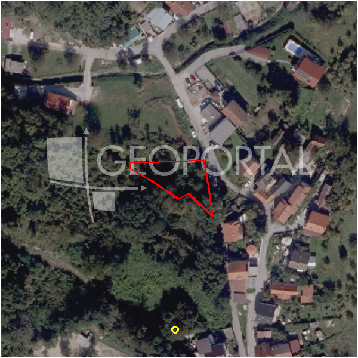

#9816 · Građevinsko zemljište u Markuševcu 708m2
Markuševec, Podsljeme, Grad Zagreb · zemljiste · njuskalo · status active · oglas ↗
Ocjena
- Score
- 63 rule 63 · LLM – · 12.09.2026.
- RLV
- 138.000 € (198 €/m²) · ratio 2,16
- Ukupna investicija
- 986.000 €
- GBP
- 450 m²
- Feedback
- –
- CRM
- –
Oglas
- Cijena
- 63.720 € (90 €/m²)
- Površina
- 708 m² · DKP 695 m² (odstupanje -1,9 %)
- Prodavatelj
- agencija · Marlimat Nekretnine
- Prvi put
- 11.09.2026. · zadnje 11.09.2026. · 0 d na tržištu
Povijest cijene
| Datum | Cijena |
|---|---|
| 11.09.2026. | 63.720 € |
Flagovi
zone_uncertainty zona nije pregledana (reviewed: false) (−5)gbp_ogranicen gbp_ogranicen
llm_pending LLM ekstrakcija/ocjena nedostupna
Komponente score-a
| rlv | {'gbp': 450.0, 'kis': 1.2, 'nkp': 369.0, 'noi': None, 'rlv': 137740.30434782617, 'ratio': 2.1616494718742336, 'value': None, 'phases': 1, 'profile': 'zagreb_visestambeno', 'gdv_neto': 1269360.0, 'cost_soft': 29700.0, 'gdv_bruto': 1586700.0, 'kis_known': True, 'total_inv': 985993.2, 'cost_build': 742500.0, 'cost_other': 146250.0, 'cost_sales': 47601.0, 'demolition': False, 'gbp_source': 'cap:max_units=3', 'rlv_per_m2': 198.2873452066885, 'parcel_area': 694.65, 'parcelation': False, 'roi_on_cost': 0.23911503649315227, 'profit_at_ask': 235765.8, 'cost_demolition': 0.0, 'total_inv_phase': 985993.2, 'parcel_area_effective': 694.65, 'sale_price_per_m2_nkp': 4300.0} |
| hard | [] |
| info | ['gbp_ogranicen', 'llm_pending'] |
| rubric | {'permits': {'max': 10.0, 'detail': {'permit': 'none'}, 'points': 0.0}, 'physical': {'max': 10.0, 'detail': {'slope_pct': 24.43, 'slope_points': 0.2280000000000002}, 'points': 0.23}, 'liquidity': {'max': 10.0, 'detail': {'n_cuts': 0, 'points_cut': 0.0, 'points_days': 0.03333333333333333, 'seller_type': 'agencija', 'points_fresh': 1.0, 'price_cut_pct': None, 'days_on_market': 1, 'points_private': 0}, 'points': 1.03}, 'rlv_ratio': {'max': 40.0, 'detail': {'rlv': 137740, 'ratio': 2.162, 'asking_price': 63720.0}, 'points': 40.0}, 'zone_quality': {'max': 15.0, 'detail': {'no_upu': True, 'source': 'gis', 'zone_class': 'stambeno', 'zone_ideal': True, 'gp_uredjeni': True}, 'points': 12.0}, 'price_vs_benchmark': {'max': 15.0, 'detail': {'source': 'auto:Podsljeme', 'deviation': 0.438, 'ask_eur_m2': 90, 'benchmark_eur_m2': 160.0}, 'points': 15.0}} |
| weights | {'llm': 0.4, 'rule': 0.6, 'model': 0.0} |
| penalties | {'zone_uncertainty': 5} |
| raw_score | 68,3 |
| rlv_notes | ['GBP 834 → 450 m² (ograničenje max_units=3)'] |
| flag_notes | {'max_gbp': 834, 'total_inv': 985993, 'zone_code': 'S', 'zone_class': 'stambeno', 'zone_source': 'gis', 'zone_reviewed': False, 'commercial_pct': 0.0, 'commercial_source': 'zone_rule'} |
| caps_applied | [] |
GIS
- Čestica
- k.o. 335347, k.č. 11082 (pin_buffer, 0,84); k.o. 335347, k.č. 11001 (pin_buffer, 0,80); k.o. 335347, k.č. 11114 (pin_buffer, 0,80)
- Zona
- S (stambeno) · NIJE pregledana
- kig / kis / katnost
- 0,30 / 1,20 / Po+P+2+Pk
- GP / UPU
- uredjeni · UPU ne
- Pristup / nagib
- unknown · 24,4 % (max 32,2 %)
- More
- –
- Zaštite
- Natura ne · zaštićeno ne · kulturno dobro ne
- Zgrade na čestici
- 0 %
- Match
- 0,84
Karta
Ortofoto (DOF)

RLV kalkulacija — pretpostavke
| gbp | {'value': 450.0, 'source': 'cap:max_units=3'} |
| kis | {'value': 1.2, 'source': 'gis'} |
| soft_pct | {'value': 0.04, 'source': 'profil'} |
| nkp_ratio | {'value': 0.82, 'source': 'profil'} |
| cost_other | {'value': 146250.0, 'source': 'profil: doprinosi+uređenje po m² GBP, financiranje+rezerva % gradnje'} |
| parcel_area | {'value': 694.65, 'source': 'dkp'} |
| asking_price | {'value': 63720.0, 'source': 'oglas'} |
| margin_on_cost | {'value': 0.15, 'source': 'profil'} |
| build_cost_per_m2_gbp | {'value': 1650.0, 'source': 'profil'} |
| sale_price_per_m2_nkp | {'value': 4300.0, 'source': 'benchmark:seed:Podsljeme'} |
| transfer_tax_and_acquisition | {'value': 0.06, 'source': 'profil'} |
Ekstrakcija iz oglasa
| utilities | ['struja', 'voda', 'plin', 'kanalizacija'] |
Opis oglasa
U podsljemenskoj zoni, u neposrednoj blizini parka prirode Medvednica prodaje se ova lijepa građevinska parcela površine 708m2. Zemljište je idealno za izgradnju obiteljske kuće. Okruženje čine obiteljske kuće. Nalazi se nedaleko od Markuševca, točnije u naselju Vidovec. Prilazna cesta je asfaltirana, a uz samu parcelu nalaze se priključci struje, vode, kanalizacija i plina.